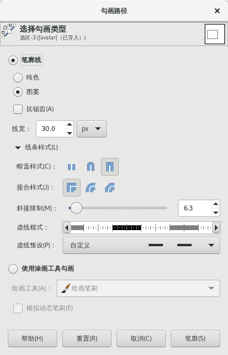

编辑→勾画路径
此命令没有快捷键。
此命令可以对路径进行描边处理。
如果没有路径，此菜单项会显示为灰色不可用。
勾画可以使用两种方式，一种是使用笔廓线，一种是使用绘图工具(涂画工具)。
如果使用绘图工具(例如铅笔、喷枪等)，那么您可以通过调整笔刷的参数来实现不同的描边效果。

勾画路径对话框
提示
这里的选项与“勾画选区”相同。
勾画可以使用两种方式，一种是使用笔廓线，另一种是使用绘图工具(涂画工具)。
如果使用笔廓线，那么您可以在对话框中对笔廓线参数进行调整，以实现不同的描边效果。
如果使用绘图工具(例如铅笔、喷枪等)，那么您可以通过调整笔刷的参数来实现不同的描边效果。
笔廓线使用工具箱中设置的前景色进行绘制。点击”线条样式”会展开对话框，有多个选项可以进行设置。
纯色/图案
您可以选择使用纯色来描边还是使用图案来描边。
纯色是指工具箱中的前景色，图案是指工具箱中的图案。
抗锯齿
抗锯齿选项可以将线条弯曲的位置进行平滑处理。
线宽
描边的宽度；默认单位是像素，可以使用其它单位。
帽盖样式
如果路径未闭合，那么此选区可以指定未闭合路径的端部形状，有三种，分别是底部、球形或方形。
接合样式
可以设置路径硬拐角的形状，有三种，分别是斜接、圆角和斜角。
(如果是勾画选区，那么此选项有可能导致描边线条粗细不均匀)
提示
帽盖样式和接合样式可以有九种组合，最好亲自试一下看有什么区别。
斜接限制
当两段路径硬连接在一起时，拐角的斜接方式由“斜接限制”来确定。
如果线条比较宽，斜接限制为0时，硬连接处是与路径点平齐的直线；随着斜接限制值的增大，会从路径点处向外延伸出一个尖头。
虚线模式
右侧的示例图中，横线被分成了多个相邻的小竖线，您可以点击这些小竖线，来设定虚线的样式。反复点击小竖线可以在“连接”和“断开”之间切换。
灰色部分表示重复，不需要修改；只修改白色及与白色相邻的一个黑色部分即可。
绘画工具
您可以从下拉框中选择一个绘画工具来绘制描边线条。
如果选择了“绘画工具”，GIMP会使用该绘画工具的当前选项来绘制描边线条，而不是此对话框中的笔廓线设置。
模拟动态笔刷
此选项允许调用动态笔刷效果。